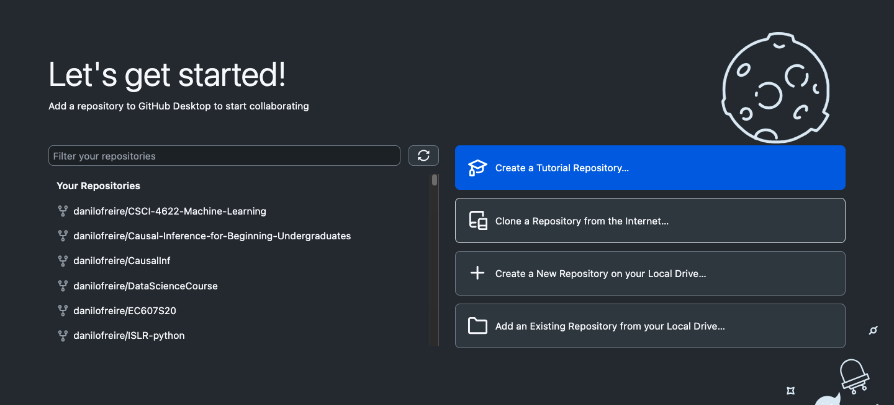
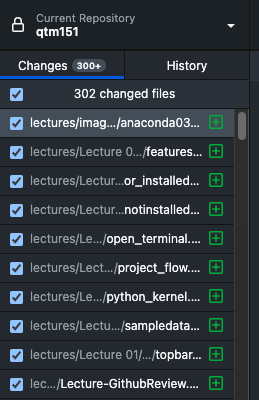
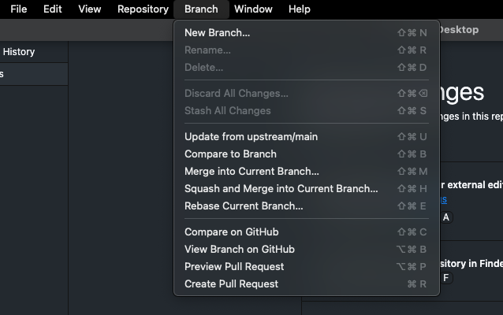

GitHub Tutorial
Introduction
This tutorial will guide you through the process of creating a GitHub educational account, downloading and installing GitHub Desktop, and downloading the course materials from GitHub to your computer. The tutorial also covers the basics of Git and GitHub, such as creating a repository, committing changes, and pushing changes to GitHub. It will also show you how to use VS Code to edit and manage your code on GitHub. You can use any tool you prefer to version control your code.
What are Git and GitHub?
Git is a distributed version control system that allows you to track changes in your codebase, collaborate with others, and manage your projects. It was developed by Linus Torvalds (of Linux fame) in 2005 and has become the de facto standard for version control in the software development industry. While Git is a powerful tool, it can be a bit challenging to use, especially for beginners. That is where GitHub comes in.
GitHub is a web-based platform that provides hosting for Git repositories, allowing you to store different versions your code in the cloud and collaborate with others. GitHub also offers several useful features, such as issue tracking, project management, and continuous integration. It can even host your website for free. GitHub has become the go-to platform for open-source projects, and many companies use it to manage their codebase, such as Microsoft, Google, and Meta1. Think about GitHub as a social network for developers, where you can follow other developers, star their projects, and contribute to open-source projects.
We will use GitHub extensively in our course. So it is important that you become familiar with it. The good news is that GitHub is free for public and private repositories for educational purposes. Here are the steps to get started with GitHub:
- Create a GitHub account. Go to https://github.com/ and sign up (top right). You can use your Emory email address to get a free educational account (more on this later). Be careful selecting your username, this will be visible to the public.

- Apply to GitHub Education. Go to https://github.com/education and apply for the GitHub Student Developer Pack. This will give you access to several tools and services for free, such as a free domain name, cloud hosting, and more. You will need to provide proof of your student status, such as an ID card or transcript. Please click on “Join GitHub Education” and follow the instructions on the website.

- Download and install GitHub Desktop. You can download GitHub Desktop from https://desktop.github.com/. GitHub Desktop is a graphical user interface (GUI) for Git that makes it easier to work with repositories. It is available for Windows and macOS. You can also use the command line if you prefer, but GitHub Desktop is more user-friendly and will be used in this tutorial.

After you install GitHub Desktop, you will need to sign in with your GitHub account. This will allow you to work with your repositories. Then you should see the following screen:

Now you are ready to start using Git and GitHub. Let us move on to the next step.
Downloading the Course Materials
The course materials are available on GitHub at https://github.com/danilofreire/qtm350. You should “fork” the repository to your account. This will create a copy of the repository in your account that you can modify and push changes to. Please click on the top-right corner of the repository page and select “Fork”.


You will be asked to make your own copy of the lecture notes. You can add any name you like. I recommend you use the name same name I used for the repository (qtm350). This will make it easier to follow the instructions in the tutorials. Click on “Create fork”.
You will only do this once. After you fork the repository, you will be able to pull changes from the original repository and push changes to your forked repository. This will allow you to keep your copy of the course materials up to date with the latest changes.
Now you need to clone your repository to your computer. This will create a local copy of the repository on your computer that you can work with. To do this, click on the green “Code” button and copy the URL of your forked repository. Again, please remember that you should clone your forked repository, not the original repository. The name in the URL should be your username.
Please open GitHub Desktop and click on the “Clone a Repository from the Internet” button. This will open a dialog where you can paste the URL of your repository and select a location on your computer to save the repository. Then click on “Clone”.



Then select “To contribute to the parent project” and click on “Continue”. This option allows you to keep updating your lecture notes from the instructor’s repository. The other option creates a local copy that has no links to the original repository. If you accidentally choose this option, you will not be able to see any changes. To reverse: (a) remove the repository on your computer (by right-clicking on the repository on Github dekstop), (b) manually delete the directory, (c) go back to Step 2.

And you are done! You now have a local copy of the course materials on your computer that you can work with. You can open the repository in VS Code by clicking on “Repository” > “Open in Visual Studio Code”. This will open the repository in VS Code, where you can edit and manage your code.

How to Add Changes to Your Repository
Now that you have the course materials on your computer, let us go over some of the essential Git and GitHub commands that you will need to use.
- A programmer makes some changes to their files: In the photo you can see that I have made many changes to a few files. GitHub Desktop will show you the changes you made to your files. You can see the changes in the “Changes” tab.

You can also see the history of your changes in the “History” tab. This will show you all the commits you have made to your repository. The green lines indicate the changes you made, and the red lines indicate the changes you removed.

- The programmer commits the changes: After making changes to your files, you need to commit them to your local repository. This creates a snapshot of your changes that you can revert to later if needed. To commit changes, open GitHub Desktop and you will see the changes you made. Write a summary of the changes in the “Summary” box and click on “Commit to main”2. It is always a good idea to write a descriptive summary of your changes so that you can easily track them later.

As you can see, I have committed the changes I made to the files. You can see the commit message in the “History” tab. This will allow you to track the changes you made to your files.

- The programmer pushes the changes to GitHub: After committing your changes to your local repository, you need to push them to GitHub. This will update the remote repository with the changes you made. To push changes, click on “Repository” > “Push” in GitHub Desktop. This will push your changes to GitHub.

As you can also see, there are two options: “Push” and “Fetch”. “Push” will push your changes to GitHub, while “Fetch” will fetch (“download”) changes from GitHub. You can use “Fetch” to update your local repository with the changes from GitHub. We will cover this in more detail in the next section.
Updating the Course Materials
The course materials will be updated regularly with new content, bug fixes, and improvements. To keep your copy of the course materials up to date, you need to pull changes from the original repository. However, before proceeding, make sure that you have read the previous section and that you have committed all outstanding changes.
- In the top panel go to the “Branch” tab. Click on the option “update from upstream/main”.
- “upstream” refers to the original repository (the instructor’s).
- “main” is usually the name given to the primary version of your repository.
- Note: You can create different branches to work on different features or bug fixes. This allows you to work on different parts of your codebase without affecting the main branch. You can then merge the changes from the different branches into the main branch when you are ready.

Some practical advice:
Try to do the updating process at the start of every class, to make sure you have the latest version.
Store any modifications to the files with a separate file name. This avoids your files being overwritten by the instructor’s version when you do this process
Privacy: Right now, your forked repository is publicly visible on your account. If you want to change this, you can make your repository private. How to do this:
- Go to your repository on GitHub
- Click on the “Settings” tab
- Scroll down to the “Danger Zone” section
- Click on “Make private”
- Confirm the change
And that is it! You now know how to use Git and GitHub to manage your code and collaborate with others. If you have any questions or need help, feel free to ask. I am here to help you. Good luck with your coding!
Recommended Readings and Resources
- GitHub Guides: A collection of guides to help you get started with Git and GitHub.
- GitHub Skills: A very useful website to help you improve your Git and GitHub skills.
- GitHub Desktop Documentation: The official documentation for GitHub Desktop.
- Pro Git: A free book that covers everything you need to know about Git.
- How to Use Git & GitHub Desktop Tutorial for Beginners - YouTube: A video tutorial that covers the basics of GitHub Desktop. There are many other tutorials on YouTube that can help you get started, so feel free to explore!
Footnotes
As a curiosity, the code for the Apollo 11 mission is also available on GitHub.↩︎
The default branch in GitHub is called
main. This is the branch where you will make most of your changes. You can create other branches if you want to work on different features or bug fixes.↩︎